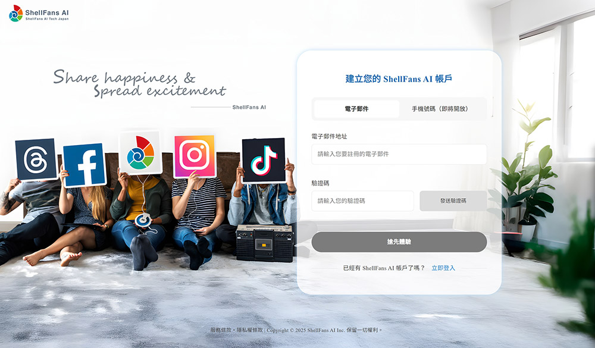
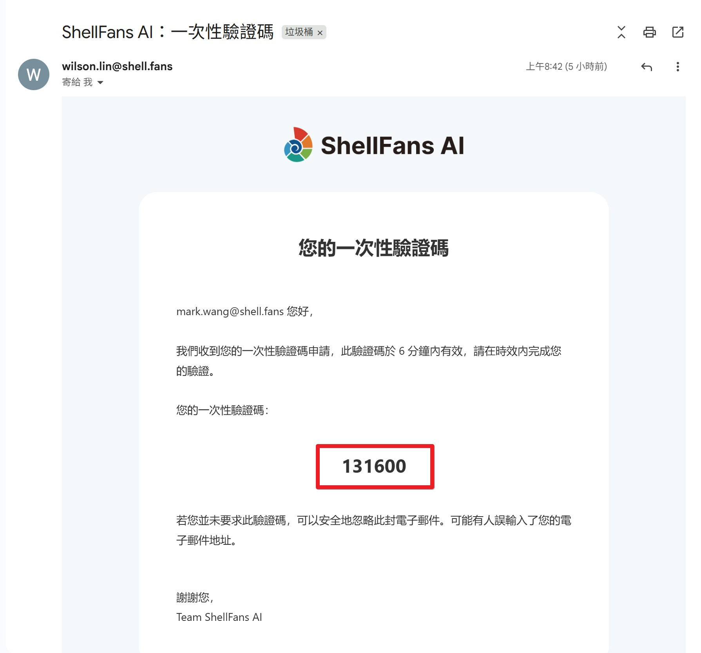
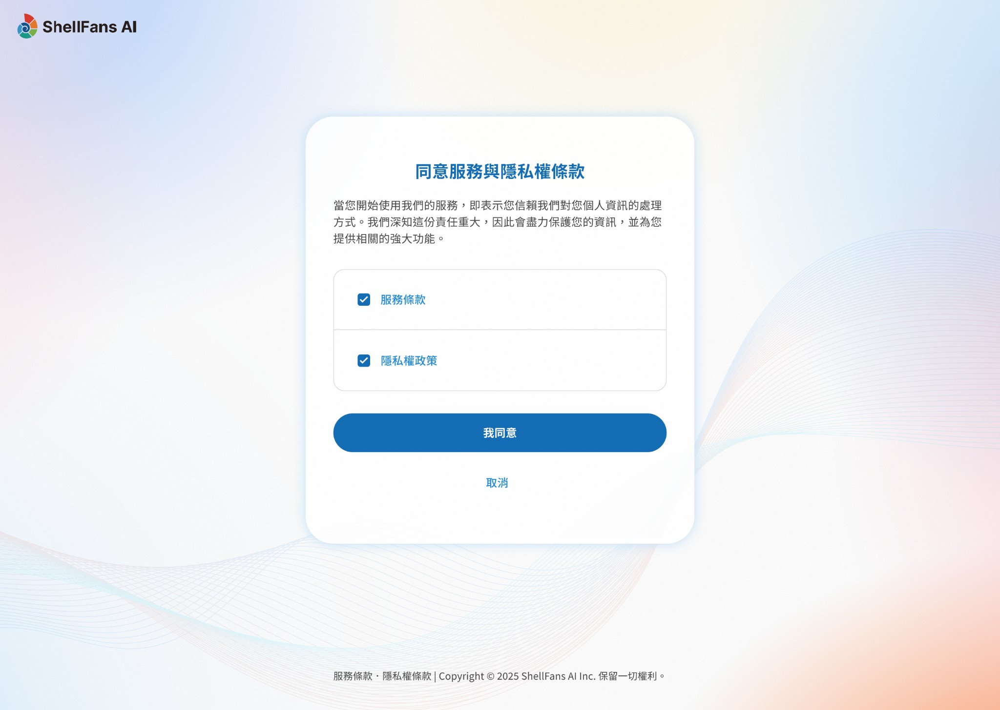
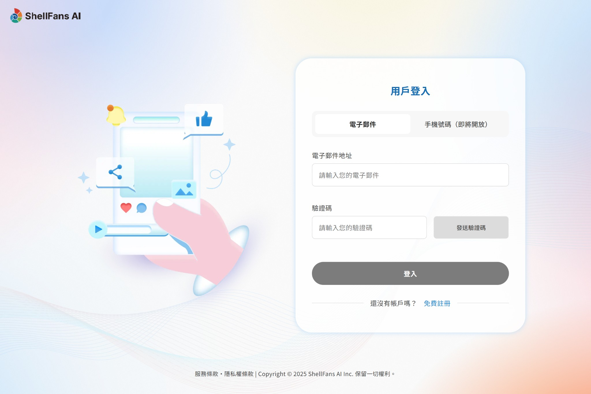
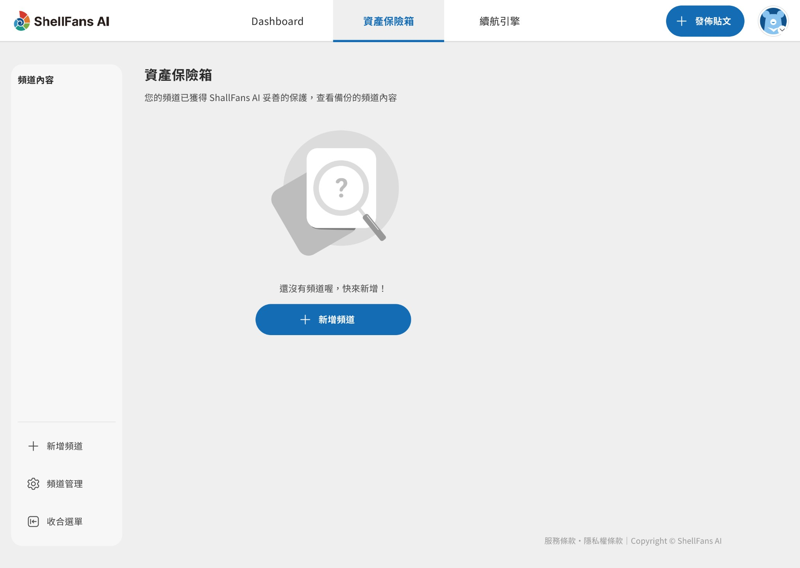
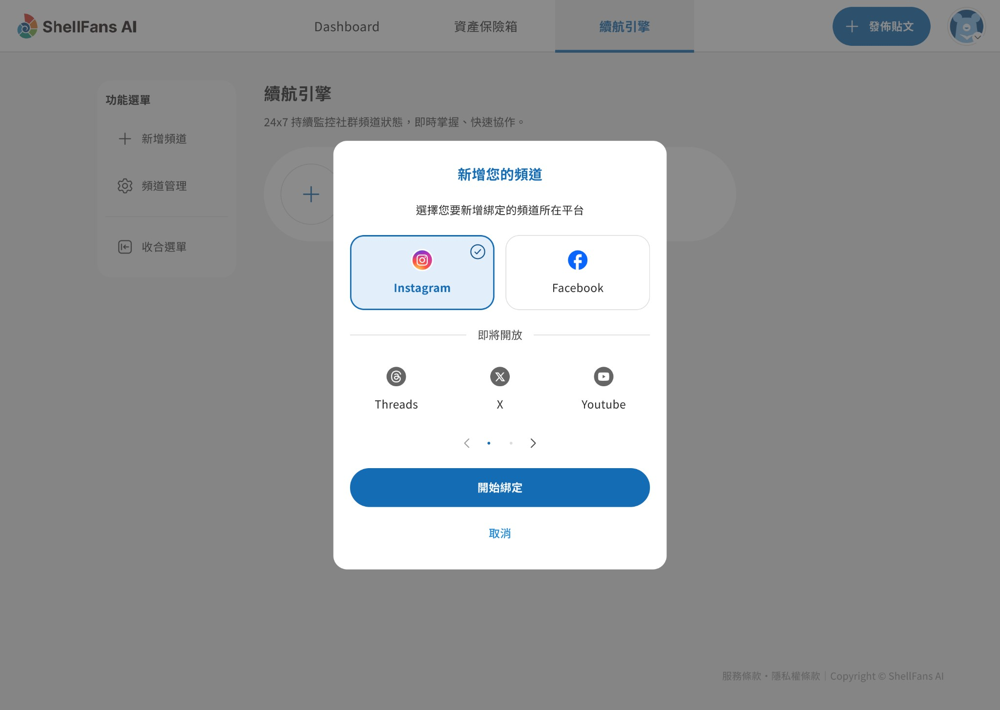

1.1 註冊您的專屬帳戶
初次見面，請先建立一個屬於您的帳號。我們採用安全的 Email OTP 驗證方式，無須記憶複雜的密碼。
1.在您的電腦上前往 ShellFans AI 用戶後台頁面 ↗️。

圖 1，用戶註冊頁，新用戶以此為起點。
2.在「電子郵件地址」欄位，輸入一個從未註冊使用過的有效 Email 地址。（例如：yournametest01@gmail.com。）
3.點擊「發送驗證碼」按鈕。
4.前往您剛剛輸入的 Email 信箱服務（非本產品頁面），收取主旨為「ShellFans AI：一次性驗證碼」的信件。

圖 2：系統寄送一次性驗證碼（OTP）信件，使用此 6 位數字進行驗證、完成後續註冊流程。
5.將信件中的 6 位數字驗證碼複製或記下。
6.切換回 ShellFans AI 註冊帳戶頁。
7.在「驗證碼」的欄位中，貼上或輸入剛剛提供給您的 6 位數字驗證碼，點擊「搶先體驗」按鈕。
8. 驗證碼驗證無誤後，將自動跳轉至下一步，同意服務與隱私權條款頁。確認條款無誤後，點擊「我同意」按鈕，即完成註冊帳戶。

圖 3：完成 OTP 驗證後，進入同意條款頁面，檢視我們的產品服務與隱私權條款。
9.完成註冊後，跳轉至「輸入您的帳戶資訊」頁。系統將自動帶入您的資訊至必填欄位中。
圖 5：註冊完成權益說明頁，此為成為新用戶流程的最後頁面。點擊「開始使用」，立即使用ShellFans AI 的服務。
說明：
●若在電子郵件地址欄位下方顯示：「您的 Email 格式輸入錯誤，請您再次確認。」。請您完整輸入您的 Email，須包含“@”後方的所有資訊，例如：google@gmail.com。
●電子郵件地址下方顯示提示：「此帳戶已被使用，請重新確認您輸入的電子郵件。」。代表您的Email 已經註冊成功。請前往 用戶登入頁。
●請於 OTP 驗證碼的有效時間 5 分鐘內，正確輸入至「驗證碼」欄位中。若輸入後，顯示下列提示：
○驗證碼輸入錯誤：「驗證碼核對失敗，請確認您驗證碼是否正確，並再次輸入。」
○驗證碼過期：「您的驗證碼已失效。請您檢查確認，或使用新的驗證碼進行註冊。」
●沒收到 OTP 驗證碼？您可以採取行動：
○檢查是否被保存到電子信箱中的垃圾郵件，或廣告推廣等收件夾中。
○檢查是否誤把我們的系統寄件者：system@shell.fans，加到封鎖名單中。
●若您不同意我們的服務條款、隱私權條款，請在同意使用條款的頁面中，立即關閉ShellFans AI 的視窗，中止後續的註冊流程。
●在「輸入您的帳戶資訊」頁面，請務必輸入所有必填欄位的個人資訊。否則無法點擊「下一步」。
1.2 登入您的帳戶
已經是我們的用戶了嗎？歡迎回來！
1.前往ShellFans AI 用戶後台頁面。

圖 6：進入用戶登入頁，已註冊用戶可藉由 Email OTP 的方式登入帳戶。
2.輸入您註冊時使用的 Email 地址，並點擊「發送驗證碼」。
3.前往您 Email 地址的電子信箱，收取主旨為「ShellFans AI：一次性驗證碼」的信件。
4.複製信件中的 6 位數字驗證碼，返回「用戶登入」頁中。
5.將驗證碼輸入到「驗證碼」欄位，並點擊「登入」。
6.成功登入，即進入您的 ShellFans AI 用戶後台。
說明：
●沒收到 OTP 驗證碼？您可以採取行動：
○檢查是否被保存到電子信箱中的垃圾郵件，或廣告推廣等收件夾中。
○檢查是否誤把我們的系統寄件者：system@shell.fans，加到封鎖名單中。
○確認此 Email 是否已成功完成註冊。
●請於 OTP 驗證碼的有效時間 5 分鐘內，正確輸入至「驗證碼」欄位中。若輸入後，顯示下列提示：
○驗證碼輸入錯誤：「驗證碼核對失敗，請確認您驗證碼是否正確，並再次輸入。」
○驗證碼過期：「您的驗證碼已失效。請您檢查確認，或使用新的驗證碼進行註冊。」
2.1 連結您第一個頻道：Facebook 粉絲專頁
讓我們從連結您的 Facebook 粉絲專頁開始，為您的貼文和粉絲提供第一層保護。
1.成功登入您的 ShellFans AI 帳戶後，前往「資產保險箱」。

圖 7：資產保險箱功能頁（未綁定任何頻道的初始狀態）。
2.點擊「新增頻道」按鈕，開啟彈窗 - 新增頻道授權。
3.於彈窗中選擇「Facebook」，並點擊「開始綁定」按鈕。

圖 8：彈窗 - 新增頻道授權中，選擇Facebook，進行後續的授權流程。
4.系統將自動開啟新的頁面 - Facebook 授權。
5.請放心，這是標準的安全流程。 請登入您的 Facebook 帳號。（請務必使用擁有該粉絲專頁管理權限的個人帳號登入。）
6.在頁面中，選擇您要授權的粉絲專頁，點擊「同意」或「繼續」系統所需要的存取權限請求。
7.完成授權流程後，Facebook 授權視窗將自動關閉。
8.頁面將自動跳轉回 ShellFans AI 的頁面，並開啟彈窗，確認您本次要綁定的粉絲專頁。
9.點擊「開始綁定」按鈕後，系統關閉彈窗。 綁定完成！系統將開始進行首次的貼文備份、實時監控頻道健康度。
說明：
● 如果您在 Facebook 授權頁面中，點擊「取消」按鈕或者直接關閉頁面等中斷授權操作，我們將不會綁定您的任何粉絲專頁。
●無法綁定粉絲專頁？
○請確認您的 Facebook 帳號是否擁有粉絲專頁的管理權限。如果沒有權限，則系統將無法綁定您的粉絲專頁。請在您的帳號已被授予管理權限後，再進行一次綁定流程。
●綁定完成後：
●在 ShellFans AI 的服務介面中，會顯示授權、綁定的 Facebook 粉絲專頁。
●系統會自動進行首次、定期備份您的頻道貼文與貼文互動資料。
●實時監控頻道的健康度，也就是授權狀態是否正常。若授權異常，將立即開啟備援機制，讓您的社群經營不間斷。
●當 ShellFans AI 正在進行備份時，您可在「資產保險箱」介面上，檢視提示訊息：「頻道內容備份中 | 預計完成時間：hh:mm」。備份完成後，該提示將自動隱藏。
2.2 連結您的 Instagram 專業帳號
守護您的 Instagram 社群資產。
1.成功登入您的 ShellFans AI 帳戶後，前往「資產保險箱」。
圖 7：資產保險箱功能頁（未綁定任何頻道的初始狀態）。
2.點擊「新增頻道」按鈕，開啟彈窗 - 新增頻道授權。
3.於彈窗中選擇「Facebook」，並點擊「開始綁定」按鈕。
圖 8：彈窗 - 新增頻道授權中，選擇Facebook，進行後續的授權流程。
4.接下來，您會遇到兩種情況，請依據您的 Instagram 設定選擇：
○情況一：您的 Instagram 已連結到一個 Facebook 粉絲專頁。
這是最常見且建議的方式。操作流程與連結 Facebook 專頁類似，系統會透過 Facebook 的授權來安全地連結您的 IG 帳號。請依照畫面指示完成授權即可。
可以參考並前往 2.1 連結您的第一個頻道：Facebook 粉絲專頁。
○ 情況二：您的 Instagram 專業帳號，沒有與 Facebook 連結。
系統會引導您直接登入Instagram 進行授權。
注意說明：為了獲得最穩定與最完整的備份效果，我們強烈建議您將 Instagram 專業帳號與一個 Facebook 粉絲專頁進行連結。
5.延續情況二：您的 Instagram 專業帳號，沒有與 Facebook 連結。系統將自動開啟新的頁面 - Instagran 授權。ShellFans AI 完全遵照 Meta 所提供的標準流程。
6.登入您的 Instagram 專業帳號，並點擊「同意」或「繼續」系統所需要的存取權限請求。
7.完成授權流程後，Instagram 授權視窗將自動關閉。
8.頁面將自動跳轉回 ShellFans AI 的頁面，並開啟彈窗，再次確認您綁定的 Instagram 帳號。
9.點擊「開始綁定」按鈕後，系統將關閉彈窗。
10.綁定完成！系統立即開始進行首次的貼文備份、實時監控頻道健康度。
說明：
●如果您在 Instagram 授權頁面中，點擊「取消」按鈕或者直接關閉頁面等中斷授權操作，我們將不會綁定您的任何粉絲專頁。
●無法綁定 Instagram 帳號？
○請確認您的 Instagram 帳號是否已切換為專業帳號。如果帳號類型為個人帳號，則無法進行授權的操作。
●綁定完成後，
●在 ShellFans AI 的服務介面中，會顯示授權、綁定的 Instagram 專業帳號。
●系統會自動進行首次、定期備份您的頻道貼文與貼文互動資料。
●實時監控頻道的健康度，也就是授權狀態是否正常。若授權異常，將立即開啟備援機制，讓您的社群經營不間斷。
● 當 ShellFans AI 正在進行備份時，您可在「資產保險箱」介面上，檢視提示訊息：「頻道內容備份中 | 預計完成時間：hh:mm」。備份完成後，該提示將自動隱藏。
2.3擴大資產保護：備份您的粉絲清單
除了貼文內容，粉絲更是您最核心的社群資產。
為了確保這份重要名單的安全，我們建議您啟用粉絲名單的備份功能。
‧頻道：Facebook 粉絲專頁
1.登入您的 ShellFans AI 帳戶後，前往「資產保險箱」。
2.在資產保險箱的主介面上，點擊粉絲名單區塊中的「👤+」icon 按鈕。
3.開啟「再次授權...」彈窗，找到您已經綁定的 Facebook 頻道，並點擊「選擇」。
4.在確認授權中，閱讀注意事項。同意後，請點選「確認授權」。
5.完成授權後，系統會指定一個專屬的 Facebook 備份帳號給您。
6.請將我們系統指定的專屬 Facebook 備份帳號加到您的粉絲專頁管理員中，並授予部分控制權的 Facebook 管理權限。
7.完成加入並授權後，ShellFans AI 將自動檢測。檢測無誤後，系統立即開始進行首次的粉絲清單備份。
說明：
●授予我們指定的專屬 Facebook 備份帳號管理權限時，請務必不要提供完整的控制權限（刪除粉專權限）。系統需要控制權的目的僅在讀取您的粉絲名單而已，不會進行其他額外操作。為避免誤解，故請遵循我們的相關說明進行操作。
●ShellFans AI 僅能針對檢視狀態設定為開放的粉絲名單進行備份。如果追蹤您的粉絲將自己的檢視設定為不公開，我們將無法為您備份到該粉絲的資料。
●基於上述原因，所以備份下來的粉絲數量，可能與您在平台上所顯示的頻道粉絲數量略有差距。
‧頻道：Instagram 專業帳戶
1.登入您的 ShellFans AI 帳戶後，前往「資產保險箱」。
2.在資產保險箱的主介面上，點擊粉絲名單區塊中的「👤+」icon 按鈕。
3.開啟「再次授權...」彈窗，找到您已經綁定的 Instagram 頻道，並點擊「選擇」。
4.在確認授權中，閱讀注意事項。同意後，請點選「確認授權」。
完成授權後，系統立即開始進行首次的粉絲清單備份。
說明：
●我們的服務基於合法合規的原則，請先完成頻道授權，才能再次進行粉絲名單備份的授權。
●ShellFans AI 僅能針對檢視狀態設定為開放的粉絲名單進行備份。如果追蹤您的粉絲將自己的檢視設定為不公開，我們將無法為您備份到該粉絲的資料。
●基於上述原因，所以備份下來的粉絲數量，可能與您在平台上所顯示的頻道粉絲數量略有差距。
3.1 進入資產保險箱：隨時查閱已備份的貼文
「資產保險箱」是您所有備份資料的家。無論是貼文、圖片、影片還是粉絲名單，都安全地存放在這裡。
1.登入 ShellFans AI 帳戶後，在 Header 的功能選單中，點擊「資產保險箱」。
2.於功能介面中，可以看到所有已成功備份的貼文列表，就像在逛您自己的社群貼文牆一樣。
3.預設顯示所有頻道的貼文內容。也可在介面的左側，選擇您想要查看的頻道。
4.您可以點擊貼文列表中的任一則貼文，查看完整的貼文內容、圖片、影片及留言。
5.介面的右方有媒體庫，彙整了頻道貼文的圖片及影片。
6.點擊「更多」icon 按鈕，查看所有的媒體清單。 點擊媒體庫清單中的任一縮圖，可查看該媒體的貼文細節與互動資料（留言、按讚數）。
3.2備份與檢視粉絲名單
粉絲是您最珍貴的社群資產。
1.在「資產保險箱」裡除了貼文列表以外，您還可以在介面中查看您已備份的「粉絲名單」。
2.在綁定頻道後，並再次授權系統進行粉絲名單備份，系統會自動為您備份已追蹤您的粉絲。
3.您可以在此區域中看到部分最新完成備份的粉絲名單，確認您的社群影響力已被妥善保存。
4.選擇介面左邊的頻道列表進行篩選檢視時，也僅會顯示您已選擇的頻道「粉絲名單」。
5.點擊「更多」icon 按鈕，可以查看所有已經完成備份的粉絲名單。
說明：
●ShellFans AI 僅能針對檢視狀態設定為開放的粉絲名單進行備份。如果追蹤您的粉絲將自己的檢視設定為不公開，我們將無法為您備份到該粉絲的資料。
●基於上述原因，所以備份下來的粉絲數量，可能與您在平台上所顯示的頻道粉絲數量略有差距。
3.3 發佈新貼文 - 直接與您的社群互動
您不僅可以備份與管理資產，現在還能直接透過 ShellFans AI，在您指定的頻道上發佈新貼文，省去切換平台的麻煩。
1.從右上角的 Header 選單中，點擊「發布貼文」功能。
2.選擇您想要發佈貼文的頻道，例如：您已授權的 Facebook 粉絲專頁。 3.在文字編輯區塊，輸入您的貼文內容。
4.若要加入圖片或影片，請點擊「🖼」icon 按鈕，並從您的電腦中選擇檔案。
5.已上傳的圖片或影片將即時顯示在文字編輯區塊下方的「預覽區」。
6.一切準備就緒後，點擊「發佈貼文」按鈕。
7.發佈成功後，系統會提示您，您也可以立即前往您的 Facebook 粉絲專頁或 IG 帳號查看成果。
說明：
●透過 ShellFans AI 發佈的每一則貼文，都會自動、即時地顯示在您的「資產保險箱」中，並進行備份。無須額外操作，實現發佈即保護！在點擊「發布貼文」功能時，請務必綁定一個頻道，例如 Facebook 粉絲專頁或者 Instagram 帳號。
4.1 什麼是頻道健康度？
當您成功連結頻道後，我們的系統就會像一位盡責的保鑣，24 小時監控著它。這一章將幫助您了解頻道的「健康度」代表什麼，以及在出現異常時該如何應對。
「頻道健康度」是我們用來表示 ShellFans AI 與您社群頻道之間連線的穩定狀態的一個指標。您可以點選系統上方 Header 主選單中的「續航引擎」檢視頻道健康度的狀態。
●您的頻道已獲得妥善守護： 代表我們之間的「授權」是有效的，系統可以順利地為您的頻道執行自動備份，您的所有資產都處於安全的保護之下。
●頻道異常（紅色)，啟動備援機制： 這是一個警示，代表我們之間的授權可能已失效，備份將會暫停。這通常不是大問題，但需要您手動處理。
為什麼授權會失效？最常見的原因有：
●您最近更改了 Facebook 或Instagram 的登入密碼。
●您在 Facebook 或Instagram 的後台，手動移除了對我們應用程式的授權。
●基於安全考量，社群平台本身（如 Facebook）的政策會定期要求用戶重新確認授權。
●您的頻道有可能已被社群平台進行限制。
4.2 授權異常？別擔心，一鍵重新授權。
當我們偵測到您的頻道授權異常時，我們會立刻透過 Email 通知您，同時在「續航引擎」的頻道列表中顯示警示。
請依照以下步驟，輕鬆恢復連線：
1.登入 ShellFans AI 帳號。
2.點擊上方 Header 選單中的「續航引擎」。
3.找到顯示著「頻道異常，啟動備援機制」的頻道，並點選該頻道。
4.在備援機制的列表中，找到授權失效、重新同步的選項，點擊旁邊明顯的「更新授權」按鈕。
5.系統會再次安全地將您引導至 Facebook 或 Instagram 的官方授權頁面。
6.請依照畫面指示，重新登入並點擊「同意」或「繼續」，再次確認授權。
7.完成後，畫面會自動跳轉回 ShellFans AI。您會看到警示消失，頻道恢復為「您的頻道已獲得妥善守護」的健康狀態。備份工作也會從此刻起自動恢復。
4.3 什麼情況下需要「還原」？
「還原」是一個強大的緊急救援功能。我們希望您永遠用不到它，但當意外發生時，它會是您的定心丸。
這個功能並非用來日常發文或搬家，而是專為以下緊急情況設計：
●人為誤刪或惡意刪除： 您或團隊成員徹底遺失了您的粉絲專頁或者是 Instagram 帳號。
●帳號被駭： 您的社群帳號被惡意入侵，導致內容被刪除或竄改。
●平台故障： 極端罕見的情況下，社群平台本身發生問題導致您的內容遺失。
●平台審查誤判：社群平台常會使用各種審查工具（例如 AI），進行貼文的審查。當發生誤判情況時，您的頻道可能無法繼續經營。
如果您遇到了上述情況，資產保險箱裡備份的內容就能派上用場。
4.4 如何從備份中還原您的內容？
當您需要將備份的貼文重新發佈到您的頻道時，請依照以下步驟操作：
1.從上方 Header 選單中，點選並進入「續航引擎」。
2.找到顯示著「頻道異常，啟動備援機制」的頻道，並點選該頻道。點擊進入該異常頻道的詳細頁面。
3.在頁面中找到「內容還原」的區域。
4. 點擊授權綁訂新的頻道中的「授權新的頻道」按鈕。
5.授權新的頻道前，請在封存頻道的彈窗中，輸入頻道名稱。
6.輸入完成後，點擊「立即封存，並授權新頻道」按鈕。
7.確認無誤後，即可開始綁定您要進行內容還原的新頻道。
8.完成頻道授權綁定流程後，系統將自動關閉所有彈窗。
9.點擊內容還原區域中的「內容還原」按鈕。
10.選擇您要還原的貼文。（目前僅可篩選 2 年內的貼文，且選擇的數量不可超過 5,000 則）
11.選擇完成後，請點選「下一步」按鈕，系統會跳出一個確認視窗。
12.在閱讀過要注意的事項後，點選「立即還原」按鈕。
13.系統會立刻將您已選擇的所有貼文內容（包含文字、圖片或影片）重新發佈到您指定的新頻道。
說明：
●「還原」是在您的頻道上建立一則全新的貼文，其內容與您的備份的內容完全相同。但它無法回復原始貼文的按讚數、留言和分享數。
●在還原的過程中，建議您不要在新頻道發布新的貼文，避免貼文順序錯亂、遺失。
●還原的貼文不會覆蓋您新頻道已有的貼文內容。
●發文時間會依據還原至新頻道的時間為主，但會依據備份的時間進行排序、依序還原。
●若您不小心選擇了不想被還原至新頻道的貼文，且該貼文已經被還原了，請自行從平台中刪除。
●隨時可以取消整個還原過程，但原本已被封鎖的頻道內容，將不可再次進行還原。
●您授權綁定了新的頻道，ShellFans AI 將自動進行新頻道的貼文、互動資料備份，以及頻道健康度的監控。但新頻道若要備份粉絲名單，則需要再次進行授權。
5.1 停止備份：封存閒置的頻道
在這裡，您可以學習如何管理您的帳號，以及如何對已連結的頻道進行封存、移除等操作。
如果您的某個頻道停止經營了，但您仍然希望保留過去所有的備份紀錄，那麼「封存」功能就是您的最佳選擇。
封存與移除有什麼不同？
●封存：系統會停止對此頻道進行新的備份、監測頻道健康度，但會完整保留所有歷史備份資料在您的資產保險箱中，您可以隨時前往查閱。
●移除：系統會停止備份，並且會永久刪除該頻道過往所有的備份資料。
如何封存頻道？
1.於任一功能頁面中，點選「頻道管理」的按鈕，前往頻道管理功能頁。
2.或者點擊右上角您的頭像，開啟下拉選單，點擊選單中「頻道管理」的按鈕，前往頻道管理功能頁。
3.找到您想停止備份但想保存歷史貼文的頻道，點擊「頻道設定」按鈕。
4.在封存頻道的選項中，點擊「封存」按鈕。
5.系統會跳出一個確認視窗，提醒您此操作將會停止該頻道的所有備份與監測服務，且無法復原。
6.請輸入該頻道的名稱，並點選「確認封存」。
7.若檢查頻道名稱無誤後，系統將立即封存該頻道的所有資料，包含貼文、互動資料、數據，以及粉絲名單。
該頻道將會被移至資產保險箱「封存」的分類中。
5.2停止備份：移除頻道授權
如果您決定不再使用我們的服務來備份某個特定頻道，可以隨時移除授權。
1.於任一功能頁面中，點選「頻道管理」的按鈕，前往頻道管理功能頁。
2.或者點擊右上角您的頭像，開啟下拉選單，點擊選單中「頻道管理」的按鈕，前往頻道管理功能頁。
3.找到您想移除的頻道，點擊該頻道中的「頻道設定」按鈕。
4.在移除授權的選項中，點擊「移除」按鈕。
5.系統會跳出一個確認視窗，提醒您此操作將會刪除所有關於此頻道的備份資料，且無法復原。
6.若您確認要移除，請輸入該頻道的名稱，並點選「確認移除」。
7.若檢查頻道名稱無誤後，系統將立即排程移除您的頻道授權，並清空該頻道已經備份的貼文、互動資料、數據，以及粉絲名單。
說明：
●移除授權後，系統可能會有短暫的作業需要進行。如果需要再次綁定該頻道，則可能需要等待超過 3 天的時間，才能再次進行授權流程。
6.1 服務與隱私權條款
本章節包含了一些您在使用本服務時，可能會需要查閱的重要資訊，包含我們的服務條款、隱私權政策以及聯絡我們的管道。
為了保障您與 ShellFans AI 雙方的權益，我們訂定了「服務條款」與「隱私權政策」。
●服務條款（Terms of Service）：這份條款文件詳細說明了您在使用本服務時，我們雙方應有的權利與義務。
●隱私權政策（Privacy Policy）： 這份政策文件則清楚解釋了我們如何蒐集、使用、儲存並保護您的個人資料與您授權的頻道內容。我們非常重視您的資料安全與使用者權益，並鼓勵您在方便時詳閱這兩份文件。當您註冊並開始使用我們的服務時，即代表您已同意這兩份條款的內容。
如何隨時查閱條款？
在我們網站的頁尾（Footer），通常在頁面的正下方或者右下角可以找到這兩份文件的公開連結。
6.2 常見問題（FAQ）
Q1. 我一直收不到驗證碼 Email 怎麼辦？
如果收不到驗證碼，請嘗試以下步驟：
■檢查垃圾郵件匣： 有時候郵件會被誤判為垃圾信。
■稍等1-2 分鐘： 郵件有時會因網路而延遲。
■確認Email 是否輸入正確： 檢查您輸入的 Email 地址是否有拼寫錯誤。
■重新發送： 在頁面倒數 180 秒計時結束後，再次點擊「發送驗證碼」。
Q2. 系統提示我「驗證碼錯誤」或「已過期」？
這是正常的安全機制。每一組驗證碼都是一次性的，且只有 5 分鐘的有效時間。如果輸入錯誤或超過時間，該驗證碼就會失效。請再次請求一組新的驗證碼即可。
Q3. 第一次綁定頻道後，備份需要多久時間？
首次備份會需要一些時間來抓取歷史貼文、留言。所需時間取決於您粉絲專頁的資料量（貼文數量、圖片多寡）。對於貼文數萬篇的大型粉專，時間可能會更長。備份啟動後，您可以先操作其他功能，系統會在背景為您處理。
但不需要所有歷史貼文備份完成後，才可以檢視您的貼文。備份過程中，您可隨時回來查看目前已備份的貼文內容。
Q4. 我的備份好像卡住了或失敗了，該怎麼辦？
如果備份狀態長時間（例如超過 2 小時）顯示「備份中」，請立即與 ShellFans AI 客服團隊聯繫說明。
Q5. 為什麼備份下來的資料，跟我在 Facebook 上看到的不太一樣？
可能的原因有幾個：
●備份尚未完成：系統可能還在處理您最新的資料，請稍後再回來查看。
●內容格式限制：部分極特殊的貼文格式（例如：第三方應用程式發布的投票活動）可能無法完美還原，但我們會盡力備份其文字與圖片內容。
●可能是哪裡出問題了：如果您發現有明顯的資料錯誤或遺漏，非常歡迎您截圖並透過回報表單告訴我們，這對我們改進產品有極大的幫助！
01.唄粉智能是什麼公司？
唄粉智能科技股份有限公司（品牌名 ShellFans AI Technology）是一家專注於社群資產續航與備份保護的 AI 科技公司，我們致力於為 KOL、創作者、品牌、代理商與企業提供一站式的跨平台社群資產備份、管理與活用解決方案。在瞬息萬變的網路世界中，我們深知您與粉絲之間珍貴連結的重要性。因此，我們擁有一支經驗豐富、技術過硬的專業團隊，專為您守護這些寶貴的社群資產。
ShellFans 續航引擎涵蓋了多個您常用的熱門社群平台，包括 Facebook、Instagram、Threads（TikTok 即將支援）。我們提供以下主要功能，幫助您更有效地保護和管理社群資產：
1. 社群資產備份：保存貼文內容、媒體素材、留言互動、公開互動紀錄、粉絲成長數據與受眾輪廓，建立第二份品牌社群資料庫。
2. 頻道健康度監測與緊急通知：當社群頻道出現異常狀態時，能及時通知您，以便您採取應對措施。
3. 頻道備援機制：若您的頻道出現問題，將協助您把已備份的內容轉移至新的頻道，持續經營、降低平台風險。
提醒：完整粉絲個資或所有粉絲身份資料會受到平台 API、隱私權與資料授權限制；ShellFans 著重保存貼文內容、媒體素材、留言互動、公開互動紀錄、粉絲成長數據、受眾輪廓與跨平台社群互動脈絡。
02.ShellFans AI 有哪些好用的功能？
我們提供三大核心功能，全方位守護您的社群資產：
1. 社群頻道綁定：簡單幾個步驟，就能將您的 Facebook、Instagram 帳號與我們連結，讓我們開始保護您的資料。
2. 自動備份與還原（資產保險箱 & 續航引擎）：
．自動備份：綁定後，系統會定期自動備份您的貼文、留言和粉絲名單，存放在安全的「資產保險箱」。 ．一鍵還原：如果帳號不幸出狀況，可以透過「續航引擎」，將備份好的內容還原到新頻道，讓您東山再起。
3. 頻道健康度監控： 我們會 7x24 小時幫您留意帳號狀態。一旦發現連線有問題或平台有限制，會立刻通知您，就像帳號的健康管家。
03.使用 ShellFans AI 需要付費嗎？
請放心，目前 ShellFans AI 的所有核心功能都完全免費！
我們希望每個人都能輕鬆體驗到社群資產保護的重要性。未來我們可能會推出更專業的進階功能（例如深度數據分析、團隊管理工具等），屆時才會需要付費升級。但現在，您可以免費享受我們提供的所有服務。
04.如何開始使用 ShellFans AI？
非常簡單！只需要三個步驟：
1. 建立帳戶：用您常用的 Email 註冊一個 ShellFans AI 帳戶。
2. 連結頻道：登入後，點擊「新增頻道」，按照畫面指示，將您的 Facebook 或 Instagram 帳號授權給我們。
3. 完成！ 接下來，系統就會開始自動為您備份。
您可以到「資產保險箱」查看備份好的內容，或在「續航引擎」監控您的頻道健康度。
06.如何註冊和登入？
我們採用了更安全、更方便的無密碼登入方式！
•註冊/登入：只需要輸入您的 Email，我們會寄一組「一次性驗證碼 (OTP)」到您的信箱。輸入驗證碼就能登入，完全不需要記密碼，再也不怕忘記密碼或密碼被盜！
•未來規劃：為了讓您更方便，我們未來會增加 Google、Facebook 或手機號碼直接登入的選項。
07.「安全碼」是什麼？有什麼用途？
「安全碼」是您和我們之間的一個「專屬暗號」，用途是幫助您辨識 Email 的真偽。
您可以在帳戶中設定一組自己記得住的數字，之後我們寄給您的每一封 Email（包含登入驗證碼），信件內都會顯示這組「暗號」。
為什麼這很重要？它可以有效防止釣魚郵件！如果您收到的信件沒有顯示安全碼，或安全碼不對，就代表是假的，請立刻刪除，不要點擊任何連結。
08.系統裡的「平台」和「頻道」是指什麼？
這兩個名詞能幫助您更好理解我們的服務：
•平台：指的是大型的社群媒體公司，例如 Facebook、Instagram、YouTube。可以想像成是「百貨公司」。
•頻道 (Channel)：指的是您在該平台上經營的個別帳號，例如您的 FB 粉絲專頁或 IG 商業帳號。可以想像成是您在百貨公司裡的「專櫃」。
我們的服務，就是幫助您管理和備份您在各大「平台」上的「頻道」。
09.使用 ShellFans AI 有沒有特別的電腦或系統要求？
這兩個名詞能幫助為了給您最好的操作體驗，請注意：
•建議使用電腦操作：我們的網站是為桌上型或筆記型電腦設計的，畫面最清楚，功能最完整。
•手機、平板可能不適用：目前網站還沒有完全支援手機或小平板的畫面尺寸，如果用行動裝置瀏覽，排版可能會亂掉或不好操作。建議螢幕寬度至少要有 1366 像素喔！
10.我在國外可以使用嗎？支援哪些語言？
•全球通用： 只要您的網路能連上我們的網站，無論您在哪個國家，都可以使用我們的服務。
•語言支援： 目前我們的網站介面與客服主要以繁體中文為主，因為我們目前主要的營運市場在台灣。未來會評估增加更多語言支援。
11.有沒有操作教學或影片可以看？
有的，我們有為您準備了詳細的圖文操作指引！我們盡力將 ShellFans AI 的每一步操作都設計得非常直覺，希望您能輕鬆上手。但我們也理解，一份清晰的說明文件能讓您在初次使用時更有安全感。
14.如何註冊一個新帳戶？
歡迎加入！註冊帳戶非常簡單：
1. 在註冊頁面輸入您常用的 Email。
2. 點擊「發送驗證碼」，到您的信箱收信並輸入驗證碼。
3. 勾選同意我們的服務條款與隱私權政策。
4. 最後，點擊「完成註冊」，就成功啦！
15.我忘記密碼了，該怎麼辦？
完全不用擔心！因為 ShellFans AI 採用無密碼登入機制。
您每次登入都是靠 Email 收取一組全新的「一次性驗證碼」，所以沒有忘記密碼的問題。
只要您的 Email 還能收信，就能隨時安全登入。
16.我可以跟同事或小編共用一個帳號，管理同一個頻道嗎？
目前一個社群頻道（例如：一個 FB 粉專）只能綁定在一個 ShellFans AI 帳戶底下，還不支援多人共同管理。為什麼這樣設計？這是為了確保資料安全和權責分明。
如果真的需要團隊協作怎麼辦？建議您可以共享登入用的 Email 信箱，讓團隊成員透過同一個帳戶登入操作。但請務必做好內部控管，確保帳戶安全喔！
17.我想改我的暱稱或個人資料，要去哪裡改？
當然可以！請按照以下步驟：
1. 登入後，點擊畫面右上角的「大頭貼」。
2. 在下拉選單中選擇「帳戶管理」。
3. 在這裡您就可以修改您的暱稱、大頭貼等個人資訊了。
請注意： 為了安全，進入帳戶管理頁面時，系統會請您再做一次 Email 驗證。
18.我想更換登入的 Email 信箱，該怎麼做？
沒問題，更換 Email 也很簡單：
1. 一樣先到「帳戶管理」頁面。
2. 找到 Email 欄位，點擊旁邊的變更按鈕。
3. 驗證舊信箱：系統會寄一封驗證信到您原本的 Email，確認是您本人操作。
4. 驗證新信箱：輸入您想更換的新 Email，系統會再寄一封驗證信到這個新信箱。
19.我想改我的「安全碼」，要去哪裡設定？
安全碼是保護您帳戶不被釣魚郵件詐騙的「專屬暗號」，我們建議您可以定期更換。
1. 請到「帳戶管理」頁面。
2. 點擊「安全碼設定」。
3. 輸入您新的安全碼，並完成 Email 驗證。
設定成功後，未來我們寄給您的信件，就會顯示新的安全碼囉！
20.如果我不想用了，要如何刪除帳戶？
如果您決定離開我們，我們會尊重您的決定並保護您的資料隱私。
您可以在「帳戶管理」中找到刪除帳戶的選項。請注意，刪除流程如下：第一階段：30 天反悔期。
當您按下刪除後，帳戶會先「暫停使用」30 天。
這段期間，您可以隨時登入來恢復帳戶，所有資料都會完好如初。
第二階段：永久刪除。如果超過 30 天您都沒有恢復帳戶，系統就會在第 31 天開始，排程永久刪除您所有的資料，包含備份內容和個人資訊。
這個步驟是無法復原的，所以請務必想清楚喔！
21.我之前申請刪除帳戶，但現在後悔了，可以救回來嗎？
可以的！只要還在 30 天的「反悔期」內，您隨時可以救回帳戶。
只要像平常一樣，用您原本的 Email 登入並完成驗證，系統就會跳出提示，詢問您是否要「重啟帳戶」。
點擊確認後，您的帳戶和所有資料就會立刻恢復正常！
請注意： 帳戶重啟後，您之前綁定的社群頻道可能需要重新授權一次，才能恢復自動備份喔！
22.我可以把我的 ShellFans AI 帳戶轉讓給別人嗎？
不好意思，基於資訊安全考量，目前我們的帳戶是不能轉讓的。您帳戶內的所有資料，包含綁定的頻道、備份內容等，都跟您註冊時的 Email 綁定，無法轉移給另一個帳戶使用。
23.你們有提供給公司用的企業版或客製化方案嗎？
ShellFans AI 目前是以標準化服務 (SaaS) 為主，希望能讓絕大多數的使用者都能用同樣簡單好用的介面來保護自己的社群資產。因此，我們暫時沒有提供專門的企業版或客製化方案。但如果您是企業用戶，有大量的頻道管理需求或特殊的合作想法，歡迎來信至 hello@shell.fans 與我們聊聊！
24.我可以把備份好的貼文或粉絲名單下載下來嗎？
目前我們不支援將備份內容匯出或下載。您可以把 ShellFans AI 想像成一個非常安全的「保險箱」，您的資料被妥善地存放在裡面，隨時可以透過我們的「還原」功能拿出來用，但無法直接把整個保險箱搬走。這麼做是為了確保資料在傳輸過程中的安全性與完整性。
25.為什麼我一直註冊不成功？
別擔心，這通常是些小問題，請試著檢查以下幾點：
•Email 打錯了嗎？ 請檢查看看 Email 是否有拼錯字，或多打了空格。
•是不是註冊過了？ 這個 Email 可能已經註冊過帳戶囉，您可以試著直接登入看看。
•驗證信掉到哪去了？ 檢查一下您的垃圾郵件匣或廣告信件匣，驗證信有時候會被誤判。
•網路或瀏覽器問題？ 試著更換網路環境，或清除瀏覽器快取（Cache/Cookie），有時候問題就解決了。
如果以上方法都試過了還是不行，請馬上聯繫我們的客服 hello@shell.fans，讓我們來幫您處理！
26.為什麼我登入不了我的帳戶？
無法登入通常跟收取驗證碼有關，請試著這樣做：
•確認 Email 是否正確： 您輸入的 Email 是當初註冊的那一個嗎？有沒有拼錯字？
•到信箱找驗證信：
。等個幾分鐘，有時候信件會延遲。
。最重要的，去垃圾郵件匣或廣告信件匣翻一翻！
•驗證碼過期了？ 驗證碼有時效性，如果過期了，回到登入頁面點擊「重新發送」即可。
•信箱是不是滿了？ 如果信箱容量滿了，也會收不到新信喔。
如果還是卡關，別客氣，直接聯繫客服 hello@shell.fans，我們很樂意協助您！
27.你們有哪些服務方案可以選擇？
我們希望讓大家都能輕鬆開始，所以目前主要有兩種免費方案：
•一般方案（免費）：只要註冊就是這個方案，可以使用我們所有核心的備份、還原與監控功能。
•早鳥方案（免費）：這是我們在推廣期間提供給早期用戶的限量特別方案，未來可能有機會優先體驗新功能或享有升級優惠！無論您是哪種方案，現在使用都是免費的，請放心體驗！
28.我想升級方案，要怎麼付款？
感謝您對我們進階服務的興趣！目前我們的所有方案都是免費的，所以還沒有開放「升級方案」或「付款」的功能。等到未來我們推出更強大的付費功能時，您就可以在帳戶設定中找到升級與付款的選項。
我們會在功能上線時第一時間通知大家，請密切關注我們的最新消息！
31.我怎麼知道收到的 Email 是不是你們官方寄的？
這點非常重要！請務必善用您的「安全碼」。您自己設定的「安全碼」，就像是您和我們之間的「專屬暗號」。只要是我們官方寄出的信件，內容一定會顯示您設定的這組安全碼。
收到信件時，請養成習慣檢查：
•安全碼正確： 表示信件是真的，可以放心。
•沒有安全碼或號碼不對： 這就是詐騙郵件！請立刻刪除，絕對不要點擊裡面的任何連結！
32.為什麼我的帳戶會自己登出？
這是為了保護您帳戶安全的正常機制，就像網路銀行的網站一樣。如果您在一段時間內沒有任何操作，系統會自動將您登出，確保即使您忘記關閉網頁，帳戶也不會被別人亂用。另外，不穩定的網路連線有時也可能導致自動登出。如果您覺得登出的頻率太高，可以聯繫客服 hello@shell.fans 為您檢查。
33.我可以同時在電腦和手機上登入嗎？
不行喔！為了確保您帳戶的最高安全，一個 ShellFans AI 帳戶在同一個時間只能在一個裝置上登入。如果您在第二台裝置（例如手機）上登入，那第一台裝置（例如電腦）上的帳戶就會被自動登出。這樣可以有效防止帳戶被盜用或在您不知情的情況下被操作。
34.我的資料都是怎麼被保存的？安全嗎？
您的資料安全是我們的第一要務，我們用多層方式來保護：
•安全加密： 您的資料在傳輸和儲存時，都經過嚴格的加密處理，就像把資料鎖在一個無法被破解的保險箱裡。
•嚴格的存取控制： 只有極少數有權限的工程師，在需要解決技術問題時，才能接觸到相關數據。
•定期備份： 我們會定期備份您的頻道內容，確保資料萬無一失。
•導入國際標準： 我們未來將導入 ISO 27001 等國際最高等級的資安標準，用世界級的規格來守護您的資料。
35.你們的服務符合 GDPR 或台灣的個資法嗎？
是的，完全符合。我們非常重視您的隱私權，並嚴格遵守台灣的《個人資料保護法》與歐盟的 GDPR 規範。我們對您的承諾很簡單：
•透明：清楚告知您我們如何使用資料。
•必要：只收集提供服務所必需的最少資料，絕不多拿。
•自主：您擁有自己資料的完整控制權，可以隨時查詢、修改或刪除。
36.如果你們的伺服器壞了，我的備份資料會不見嗎？
請放心，絕對不會。我們有非常嚴謹的「災難復原計畫」。簡單來說，我們不只在一個地方儲存您的備份資料，而是會同時在很多個不同地點的伺服器上存放多份副本。就像雞蛋不能放在同一個籃子裡一樣，即使某個地方的伺服器因為天災或意外而損壞，我們也能立刻從其他地方的備份中，完整地恢復您的所有資料。
37.如果我刪除帳戶或取消頻道授權，資料會被怎麼處理？
您的資料由您做主。當您「移除頻道授權」時：
我們會立刻停止備份該頻道的新內容，並啟動刪除排程，立即刪除您已備份的舊資料。
當您「刪除帳戶」時： 帳戶會先進入 30 天的「反悔期」。若 30 天後您未恢復，系統就會永久性地、無法復原地刪除您帳戶下的所有資料，包含個人資訊和所有頻道的備份內容。
38.你們的員工會偷看我的貼文或粉絲名單嗎？
絕對不會。 我們的員工無法隨意查看您的任何內容。
我們所有的備份和分析都是由系統自動化完成的，不經過人手。
只有在極少數的特殊情況下，例如：
1. 您主動回報技術問題，且為了解決問題，在徵得您同意後，內部客服人員才可能在嚴格的權限控管下，查看與該問題相關的最小範圍資料。
2. 配合法院或政府的法律要求。除此之外，沒有人會看到您的內容。
我們深知信任的可貴，並以最高標準保護您的隱私。
39.我好像發現了你們系統的資安漏洞，該怎麼回報？
非常感謝您願意協助我們變得更安全！您的回報對我們至關重要。
如果您發現任何潛在的資安問題，請不要在公開平台討論，並請立即透過以下方式聯繫我們：
•Email 至： hello@shell.fans
•透過官網的客服表單請您盡量詳細地描述問題，如果能附上截圖就更好了。
我們的資安團隊會立刻處理，並在問題修復後向您致謝！
40.授權給你們，會不會在我的頻道上亂發文或亂操作？
絕對不會。 我們向您鄭重承諾，ShellFans AI 絕對不會在未經您明確授權與操作的情況下，在您的任何社群頻道上主動發布、刪除、修改任何內容，或進行任何互動操作。
您授予我們的權限，用途僅限於：
•讀取您的公開內容，以便進行備份。
•在您主動點擊『還原』時，代表您將備份內容發布到您指定的新頻道。
所有的操作都是被動的、自動化的，並且僅在提供核心服務時才會觸發。您可以把我們想像成一個忠實的保險箱管家，只會在您下指令時才會動作。
41.如果未來 ShellFans AI 公司停止營運，我備份的資料怎麼辦？
我們理解您的擔憂，這也是我們非常嚴肅看待的責任。
我們承諾，即使在最壞的情況下，我們也將把您的資料權益放在第一位。
我們的『資料退場機制』如下：
•提前通知： 我們會在服務正式終止前的至少 30-60 天，透過 Email 和平台公告，清楚地通知所有用戶。
•提供匯出功能： 在這段緩衝期內，我們會緊急開發並上線『資料匯出』功能，讓您可以將自己所有備份的文字、圖片等原始檔打包下載，保存在您自己的地方。
•確保資料銷毀： 在服務正式終止並確保所有用戶有足夠時間匯出資料後，我們會依循最高的安全標準，將伺服器上所有用戶的資料進行永久性、無法復原的刪除，確保您的隱私萬無一失。
43.如何授權綁定我的 Facebook / Instagram / Threads 頻道？
授權綁定很簡單，讓我們開始吧！
1. 登入後，在主畫面點擊「新增頻道」。
2. 選擇您想綁定的平台（例如 Facebook）。
3. 點擊「開始綁定」，畫面會跳轉到該平台的授權頁面。
4. 請務必同意所有權限，並選擇您要管理的粉絲專頁或 IG 帳號。
完成後，頁面會自動跳轉回來，就代表綁定成功了！
小提醒：
•綁定 Facebook，請確認您是該粉絲專頁的管理員。
•綁定 Instagram，請先將帳號切換為商家或創作者帳號。
•Threads 目前即將開放，敬請期待！
44.我想取消某個頻道的授權，該怎麼做？
您可以隨時取消頻道的授權。
1. 點擊右上角大頭貼，進入「頻道管理」。
2. 選擇您想移除的頻道。
3. 點擊「移除授權」按鈕，並依照指示確認。
重要提醒：移除授權後，該頻道所有已備份的內容和數據也會一併被刪除，且無法復原喔！
45.「頻道健康度」是什麼意思？
「頻道健康度」就像是您社群帳號的「健康檢查報告」。
我們會 7x24 小時監控您綁定的頻道，並用兩種狀態告訴您帳號目前好不好：
✅ 服務正常運行： 綠燈！代表帳號一切正常，我們正妥善地守護著。
🚨 平台已限制： 紅燈！代表我們跟您帳號的連線可能中斷了，例如授權過期 或者 您的帳號可能被社群平台官方封鎖或限制功能了。
這時請趕快登入 ShellFans AI 「重新授權」。或者前往該平台查看原因，並準備使用我們的還原功能。
46.授權給你們，會存取哪些資料？
我們只會存取提供服務絕對必要的資料，而且大部分都是公開資訊，例如：
•您的頻道名稱、大頭貼、簡介。
•您已發布的貼文內容（文字、圖片、影片）。
•貼文下方的公開留言與按讚數。 ．您的公開粉絲名單。我們絕對不會存取：
•您的個人密碼。 ．您的私人訊息 (私訊)。
•您的信用卡或付款資料。
•您的非公開好友名單。
47.為什麼我的頻道一直授權失敗？
授權失敗最常見的原因是「權限不夠」，請檢查以下幾點：
．您是管理員嗎？
。要綁定 FB 粉絲專頁，您必須是該粉專的**「管理員」**，編輯或其他角色是不行的。
。要綁定 IG 商業帳號，請確認該 IG 已連結到一個您有管理員權限的 FB 粉專。
．授權時權限是否都有打勾？
在授權過程中，平台會跳出一個權限列表，請務必全部打勾同意，如果少勾了任何一個，都可能導致授權失敗。
．試試基本排除法：
。清除瀏覽器快取 (Cache/Cookie) 後再試一次。
。改用無痕模式或換一個瀏覽器試試看
。如果問題還在，請立刻聯繫客服，並告訴我們您是哪個頻道無法授權，我們會協助您找到問題！
48. 為什麼一定要把 IG 個人帳號換成商家/創作者帳號？
這是因為 Instagram 官方的規定。只有「商家」或「創作者」這類專業帳號，Instagram 才會開放足夠的權限，允許像我們這樣的第三方工具來進行備份和管理。
個人帳號的權限非常有限，無法讀取貼文數據，也無法備份粉絲名單，所以是無法使用我們的服務的。
如何轉換？轉換過程非常簡單，在 Instagram App 裡的「設定」中，找到「帳號類型和工具」，就可以免費切換成專業帳號，整個過程不到一分鐘！
49. 為什麼我的頻道會被停權？
頻道被停權，問題是出在社群平台本身（例如 Facebook 或 Instagram），而不是 ShellFans AI。
通常是因為違反了該平台的社群守則。
常見原因：
•發布了不當內容（如暴力、色情、仇恨言論）。
•被大量用戶檢舉。
•短時間內有異常大量的操作（如瘋狂按讚、留言）。
•被平台系統誤判。
您該怎麼做？
1. 立刻登入該社群平台，查看官方給您的通知，了解被停權的具體原因。
2. 依照平台的指引提出申訴。
同時，您可以準備使用 ShellFans AI「續航引擎」的內容還原功能，將您的心血結晶還原到新的頻道，讓您的社群經營不中斷！*ShellFans AI 作為第三方工具，無法直接解除社群媒體平台的停權。所有關於停權的處理和申訴，都必須由您直接與相關社群媒體平台溝通。
50. 資料大概多久會備份一次？
在您成功綁定頻道後，系統就會開始自動定期備份。
一般來說，根據您頻道的資料量大小，大約每 3 到 5 天會完成一次完整的備份。
您完全不需要手動操作，我們會默默地在背景為您守護好每一份心血。
51. 我怎麼知道有沒有備份成功？要去哪裡看？
很簡單！您可以隨時到「資產保險箱」功能裡查看。
•查看備份內容： 所有備份好的貼文、留言、粉絲名單都會清楚地陳列在裡面。
•確認備份狀態： 如果系統正在進行備份，頁面上也會即時顯示「備份中」的狀態，讓您隨時掌握進度。
52.備份的內容會有哪些？
我們會備份您授權頻道中的所有公開資料，主要包含：
•頻道的基本公開資訊。
•所有貼文（包含照片、影片、文字、發布時間）。
•貼文下方的所有公開留言與回覆。
•公開的粉絲名單。請放心，所有非公開、隱藏或私密的內容，我們都不會也無法備份。
53.內容還原設定」是什麼？要怎麼設定？
這個功能讓您提前決定，萬一帳號真的出事時，哪些貼文是您想要還原的。
如何設定？
1. 到「資產保險箱」中，找到「內容還原設定」。
2. 選擇您想設定的頻道。
3. 系統會列出所有已備份的貼文，您可以手動勾選您認為重要的內容。
4. 您也可以點擊「預設勾選」，讓系統自動幫您選好最近 2 年內、最多 5,000 則的貼文。
5. 按下「儲存設定」就完成了！預先做好設定，當意外發生時，就能更快、更精準地完成還原！
54.為什麼我備份的內容不是最新的？
這通常是正常的，有兩個可能原因：備份有固定週期：我們的備份是定期進行的（約 3-5 天一次），而不是「即時同步」。
如果您剛發布了新貼文，它會被排到下一個備份週期才會出現，請耐心等待一下。
頻道同步異常：如果備份內容很久都沒更新，請到「續航引擎」檢查頻道健康度是否顯示「同步異常」。如果是，通常只需要點擊「重新授權」，讓連線恢復正常，備份就會繼續了。
55.有哪些內容是 ShellFans AI 「不會」備份的？
為了讓您清楚了解我們的服務範圍，以下是我們目前**『沒有』**備份的內容類型：
•有時效性的內容：例如 Instagram/Facebook 的限時動態 (Stories)。
•短影音格式：例如 Instagram Reels (未來計畫支援)。
•廣告相關內容：廣告貼文、廣告成效數據等。
•私人訊息：任何平台的私人訊息 (Messenger, IG Direct)。
•社團內容：Facebook 社團內的貼文與互動。
•非公開內容： 任何您設定為非公開、僅好友可見或隱藏的貼文。
我們的核心是備份您在頻道上公開、長久保存的內容。未來我們會持續評估擴大備份範圍的可能性。
56.我的帳號被停權了，要怎麼開始還原貼文？
當您最不希望的事情發生時，「續航引擎」就是您的救星。
1. 請先到您使用的社群平台（如 FB/IG）建立一個全新的、乾淨的頻道。
2. 回到 ShellFans AI，進入「續航引擎」，點擊那個顯示「平台已限制」的舊頻道。
3. 點擊「立即還原」，系統會引導您授權綁定您剛才建立的新頻道。
4. 選擇您想要還原的備份內容（會根據您之前的「還原設定」預先勾選）。
5. 確認後，系統就會開始將您的舊貼文，按照時間順序，一則一則發布到您的新頻道上！
重要提醒： 在還原過程中，請不要在新頻道上手動發布任何新貼文，以免順序錯亂喔！
57.頻道狀態顯示「同步異常」是什麼意思？該怎麼辦？
「同步異常」代表我們跟您社群帳號的連線中斷了，無法繼續為您備份。
可能原因：
1. 平台的授權過期了 (這是最常見的)。
2. 您將頻道設定為不公開或有其他限制。
解決方法：非常簡單！到「續航引擎」中，點擊該異常頻道，然後點擊「更新授權」或「重新授權」，按照步驟重新連線一次就好了。您的舊備份資料完全不會受影響。
58.我怎麼知道貼文還原的進度？完成了嗎？
您可以透過以下幾種方式來確認：
•系統預估時間： 開始還原時，系統會告訴您一個預計完成的時間。
•Email 通知： 還原任務全部完成後，我們會寄一封 Email 通知您。
•平台內查看： 在「續航引擎」中，該頻道的狀態會從「還原中」變為「還原完成」。
•直接去新頻道看： 最直接的方式，就是去您還原的那個新頻道，看看貼文是不是都出現了！
59.貼文正在還原中，我可以中途取消嗎？
我們強烈建議不要中途取消！因為還原是一個複雜的連續動作，中斷可能會導致您的新頻道內容不完整（一部分貼文有、一部分沒有），且舊資料無法再次進行還原。
最好的方式就是耐心等待系統完成所有工作。如果還原卡住了非常久都沒有動靜，請不要自行操作，請馬上聯繫我們的客服團隊來協助您。
60.系統顯示還原完成，但我的新頻道裡一篇貼文都沒有，怎麼回事？
遇到這種情況請先不要慌張，請依照以下步驟檢查：
•耐心等候並重新整理： 有時候社群平台本身需要一點時間來處理和顯示大量的湧入內容，請稍等幾分鐘後再重新整理您的新頻道頁面。
•檢查新頻道的權限： 回到 ShellFans AI，對您用來還原的「新頻道」再做一次「重新授權」。確保我們有足夠的權限可以「發布」貼文到這個新頻道上。
•確認頻道設定： 檢查您的新頻道是否有任何隱私或發布限制的設定。
如果以上步驟都試過後，內容還是沒有出現，請立刻聯繫我們的客服，並提供您的帳號、新舊頻道名稱等資訊，我們會為您深入調查。
61.還原後的貼文，會跟原來的一模一樣嗎？
這個問題非常關鍵！
我們的還原功能是『將原始的貼文內容，完美地重新發布到一個新頻道上』。會還原的項目：
•原始的文字內容
•原始的照片、影片 (畫質會盡力維持最佳)
•原始的發布時間 (會顯示在貼文內，但新貼文的排序仍以還原當下的時間為主)無法還原的項目：
•原始的按讚數、留言、分享數： 這些互動數據是跟著舊貼文的，無法轉移到新貼文上。
還原後的貼文，互動數會從 0 開始計算。您可以想像成：我們幫您把舊家的珍貴照片和日記，原封不動地搬到一個全新的、乾淨的家裡重新掛上牆。內容都在，但訪客的留言簿是全新的。
62.數據多久會更新一次？
數據的更新頻率是跟著我們的備份週期走的。依據不同的方案，系統大約每 3-5 天會完成一次頻道內容備份。備份完成後，就會立刻開始進行數據分析，並在 24 小時內更新到您的儀表板上。所以您可以預期每 3-5 天就能看到最新的數據分析結果。
65.我可以把這些分析報告匯出成 Excel 或 PDF 檔嗎？
目前暫時還不支援匯出報表的功能。您現在可以在我們的平台介面上直接查看所有分析圖表。我們知道匯出報表對於製作報告或深度分析很重要，這個功能已經在我們未來的開發計畫中了，敬請期待！請持續關注我們的官方網站、通知或相關公告，我們會在這些新功能上線時，第一時間通知您。
67.無法運作，顯示錯誤代碼該怎麼處理？
遇到錯誤代碼時，請按照這個SOP，輕鬆解決問題：
1. 別慌張，先截圖：將整個錯誤畫面（包含代碼和訊息）截圖或拍照下來，這是最重要的線索。
2. 試試基本招式：
•重新整理 (F5)：很多時候只是暫時的小問題。
•清除瀏覽器快取（Cache / Cookie）：清除舊資料可能會有幫助。
•換個方式： 改用無痕模式或換一個瀏覽器（例如 Chrome 換成 Edge）試試。
3. 聯繫我們：如果問題還在，請立刻聯繫客服（hello@shell.fans），並附上您剛剛的截圖，告訴我們您在做什麼操作時遇到問題。我們的團隊將會立即分析您提供的資訊，診斷問題根源，並盡快為您提供解決方案。
68.如果出現的錯誤代碼是 4 開頭的（例如 401, 403, 404）？
4 開頭的錯誤，通常問題是出在帳戶權限或操作錯誤等問題。
•401 / 403（沒有權限）： 最常見！通常代表您的登入授權過期或者您沒有相關的檢視權限。
解決方法：重新登入 或者 前往其他服務功能。
•404（找不到頁面）： 代表您想去的頁面不存在，可能是網址打錯了。
解決方法： 回到我們的首頁，重新點擊功能連結。